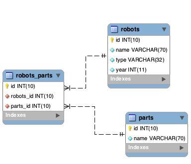
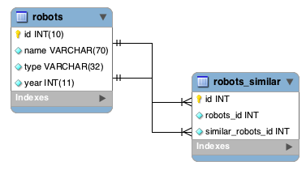

Working with ModelsA model represents the information (data) of the application and the rules to manipulate that data. Models are primarily used for managing the rules of interaction with a corresponding database table. In most cases, each table in your database will correspond to one model in your application. The bulk of your application’s business logic will be concentrated in the models. Phalcon\Mvc\Model is the base for all models in a Phalcon application. It provides database independence, basic CRUD functionality, advanced finding capabilities, and the ability to relate models to one another, among other services. Phalcon\Mvc\Model avoids the need of having to use SQL statements because it translates methods dynamically to the respective database engine operations.
Creating ModelsA model is a class that extends from Phalcon\Mvc\Model. It must be placed in the models directory. A model file must contain a single class; its class name should be in camel case notation: <?php
class Robots extends \Phalcon\Mvc\Model
{
}
The above example shows the implementation of the “Robots” model. Note that the class Robots inherits from Phalcon\Mvc\Model. This component provides a great deal of functionality to models that inherit it, including basic database CRUD (Create, Read, Update, Delete) operations, data validation, as well as sophisticated search support and the ability to relate multiple models with each other.
By default, the model “Robots” will refer to the table “robots”. If you want to manually specify another name for the mapping table, you can use the getSource() method: <?php
class Robots extends \Phalcon\Mvc\Model
{
public function getSource()
{
return "the_robots";
}
}
The model Robots now maps to “the_robots” table. The initialize() method aids in setting up the model with a custom behavior i.e. a different table. The initialize() method is only called once during the request. <?php
class Robots extends \Phalcon\Mvc\Model
{
public function initialize()
{
$this->setSource("the_robots");
}
}
The initialize() method is only called once during the request, it’s intended to perform initializations that apply for all instances of the model created within the application. If you want to perform initialization tasks for every instance created you can ‘onConstruct’: <?php
class Robots extends \Phalcon\Mvc\Model
{
public function onConstruct()
{
//...
}
}
Public properties vs. Setters/GettersModels can be implemented with properties of public scope, meaning that each property can be read/updated from any part of the code that has instantiated that model class without any restrictions: <?php
class Robots extends \Phalcon\Mvc\Model
{
public $id;
public $name;
public $price;
}
By using getters and setters you can control which properties are visible publicly perform various transformations to the data (which would be impossible otherwise) and also add validation rules to the data stored in the object: <?php
class Robots extends \Phalcon\Mvc\Model
{
protected $id;
protected $name;
protected $price;
public function getId()
{
return $this->id;
}
public function setName($name)
{
//The name is too short?
if (strlen($name) < 10) {
throw new \InvalidArgumentException('The name is too short');
}
$this->name = $name;
}
public function getName()
{
return $this->name;
}
public function setPrice($price)
{
//Negative prices aren't allowed
if ($price < 0) {
throw new \InvalidArgumentException('Price can\'t be negative');
}
$this->price = $price;
}
public function getPrice()
{
//Convert the value to double before be used
return (double) $this->price;
}
}
Public properties provide less complexity in development. However getters/setters can heavily increase the testability, extensibility and maintainability of applications. Developers can decide which strategy is more appropriate for the application they are creating. The ORM is compatible with both schemes of defining properties. Models in NamespacesNamespaces can be used to avoid class name collision. The mapped table is taken from the class name, in this case ‘Robots’: <?php
namespace Store\Toys;
class Robots extends \Phalcon\Mvc\Model
{
}
Understanding Records To ObjectsEvery instance of a model represents a row in the table. You can easily access record data by reading object properties. For example, for a table “robots” with the records: mysql> select * from robots;
+----+------------+------------+------+
| id | name | type | year |
+----+------------+------------+------+
| 1 | Robotina | mechanical | 1972 |
| 2 | Astro Boy | mechanical | 1952 |
| 3 | Terminator | cyborg | 2029 |
+----+------------+------------+------+
3 rows in set (0.00 sec)
You could find a certain record by its primary key and then print its name: <?php
// Find record with id = 3
$robot = Robots::findFirst(3);
// Prints "Terminator"
echo $robot->name;
Once the record is in memory, you can make modifications to its data and then save changes: <?php
$robot = Robots::findFirst(3);
$robot->name = "RoboCop";
$robot->save();
As you can see, there is no need to use raw SQL statements. Phalcon\Mvc\Model provides high database abstraction for web applications. Finding RecordsPhalcon\Mvc\Model also offers several methods for querying records. The following examples will show you how to query one or more records from a model: <?php
// How many robots are there?
$robots = Robots::find();
echo "There are ", count($robots), "\n";
// How many mechanical robots are there?
$robots = Robots::find("type = 'mechanical'");
echo "There are ", count($robots), "\n";
// Get and print virtual robots ordered by name
$robots = Robots::find(array(
"type = 'virtual'",
"order" => "name"
));
foreach ($robots as $robot) {
echo $robot->name, "\n";
}
// Get first 100 virtual robots ordered by name
$robots = Robots::find(array(
"type = 'virtual'",
"order" => "name",
"limit" => 100
));
foreach ($robots as $robot) {
echo $robot->name, "\n";
}
You could also use the findFirst() method to get only the first record matching the given criteria: <?php
// What's the first robot in robots table?
$robot = Robots::findFirst();
echo "The robot name is ", $robot->name, "\n";
// What's the first mechanical robot in robots table?
$robot = Robots::findFirst("type = 'mechanical'");
echo "The first mechanical robot name is ", $robot->name, "\n";
// Get first virtual robot ordered by name
$robot = Robots::findFirst(array("type = 'virtual'", "order" => "name"));
echo "The first virtual robot name is ", $robot->name, "\n";
Both find() and findFirst() methods accept an associative array specifying the search criteria: <?php
$robot = Robots::findFirst(array(
"type = 'virtual'",
"order" => "name DESC",
"limit" => 30
));
$robots = Robots::find(array(
"conditions" => "type = ?1",
"bind" => array(1 => "virtual")
));
The available query options are:
If you prefer, there is also available a way to create queries in an object-oriented way, instead of using an array of parameters: <?php
$robots = Robots::query()
->where("type = :type:")
->andWhere("year < 2000")
->bind(array("type" => "mechanical"))
->order("name")
->execute();
The static method query() returns a Phalcon\Mvc\Model\Criteria object that is friendly with IDE autocompleters. All the queries are internally handled as PHQL queries. PHQL is a high-level, object-oriented and SQL-like language. This language provide you more features to perform queries like joining other models, define groupings, add aggregations etc. Lastly, there is the findFirstBy<property-name>() method. This method expands on the “findFirst()” method mentioned earlier. It allows you to quickly perform a retrieval from a table by using the property name in the method itself and passing it a parameter that contains the data you want to search for in that column. An example is in order, so taking our Robots model mentioned earlier : <?php
class Robots extends \Phalcon\Mvc\Model
{
public $id;
public $name;
public $price;
}
We have three properties to work with here. $id, $name and $price. So, let’s say you want to retrieve the first record in the table with the name ‘Terminator’. This could be written like so : <?php
$name = "Terminator";
$robot = Robots::findFirstByName($name);
if($robot){
$this->flash->success("The first robot with the name " . $name . " cost " . $robot->price ".");
}else{
$this->flash->error("There were no robots found in our table with the name " . $name ".");
}
Notice that we used ‘Name’ in the method call and passed the variable $name to it, which contains the name we are looking for in our table. Notice also that when we find a match with our query, all the other properties are available to us as well. Model ResultsetsWhile findFirst() returns directly an instance of the called class (when there is data to be returned), the find() method returns a Phalcon\Mvc\Model\Resultset\Simple. This is an object that encapsulates all the functionality a resultset has like traversing, seeking specific records, counting, etc. These objects are more powerful than standard arrays. One of the greatest features of the Phalcon\Mvc\Model\Resultset is that at any time there is only one record in memory. This greatly helps in memory management especially when working with large amounts of data. <?php
// Get all robots
$robots = Robots::find();
// Traversing with a foreach
foreach ($robots as $robot) {
echo $robot->name, "\n";
}
// Traversing with a while
$robots->rewind();
while ($robots->valid()) {
$robot = $robots->current();
echo $robot->name, "\n";
$robots->next();
}
// Count the resultset
echo count($robots);
// Alternative way to count the resultset
echo $robots->count();
// Move the internal cursor to the third robot
$robots->seek(2);
$robot = $robots->current();
// Access a robot by its position in the resultset
$robot = $robots[5];
// Check if there is a record in certain position
if (isset($robots[3])) {
$robot = $robots[3];
}
// Get the first record in the resultset
$robot = $robots->getFirst();
// Get the last record
$robot = $robots->getLast();
Phalcon’s resultsets emulate scrollable cursors, you can get any row just by accessing its position, or seeking the internal pointer to a specific position. Note that some database systems don’t support scrollable cursors, this forces to re-execute the query in order to rewind the cursor to the beginning and obtain the record at the requested position. Similarly, if a resultset is traversed several times, the query must be executed the same number of times. Storing large query results in memory could consume many resources, because of this, resultsets are obtained from the database in chunks of 32 rows reducing the need for re-execute the request in several cases also saving memory. Note that resultsets can be serialized and stored in a cache backend. Phalcon\Cache can help with that task. However, serializing data causes Phalcon\Mvc\Model to retrieve all the data from the database in an array, thus consuming more memory while this process takes place. <?php
// Query all records from model parts
$parts = Parts::find();
// Store the resultset into a file
file_put_contents("cache.txt", serialize($parts));
// Get parts from file
$parts = unserialize(file_get_contents("cache.txt"));
// Traverse the parts
foreach ($parts as $part) {
echo $part->id;
}
Filtering ResultsetsThe most efficient way to filter data is setting some search criteria, databases will use indexes set on tables to return data faster. Phalcon additionally allows you to filter the data using PHP using any resource that is not available in the database: <?php
$customers = Customers::find()->filter(function($customer) {
//Return only customers with a valid e-mail
if (filter_var($customer->email, FILTER_VALIDATE_EMAIL)) {
return $customer;
}
});
Binding ParametersBound parameters are also supported in Phalcon\Mvc\Model. Although there is a minimal performance impact by using bound parameters, you are encouraged to use this methodology so as to eliminate the possibility of your code being subject to SQL injection attacks. Both string and integer placeholders are supported. Binding parameters can simply be achieved as follows: <?php
// Query robots binding parameters with string placeholders
$conditions = "name = :name: AND type = :type:";
//Parameters whose keys are the same as placeholders
$parameters = array(
"name" => "Robotina",
"type" => "maid"
);
//Perform the query
$robots = Robots::find(array(
$conditions,
"bind" => $parameters
));
// Query robots binding parameters with integer placeholders
$conditions = "name = ?1 AND type = ?2";
$parameters = array(1 => "Robotina", 2 => "maid");
$robots = Robots::find(array(
$conditions,
"bind" => $parameters
));
// Query robots binding parameters with both string and integer placeholders
$conditions = "name = :name: AND type = ?1";
//Parameters whose keys are the same as placeholders
$parameters = array(
"name" => "Robotina",
1 => "maid"
);
//Perform the query
$robots = Robots::find(array(
$conditions,
"bind" => $parameters
));
When using numeric placeholders, you will need to define them as integers i.e. 1 or 2. In this case “1” or “2” are considered strings and not numbers, so the placeholder could not be successfully replaced. Strings are automatically escaped using PDO. This function takes into account the connection charset, so its recommended to define the correct charset in the connection parameters or in the database configuration, as a wrong charset will produce undesired effects when storing or retrieving data. Additionally you can set the parameter “bindTypes”, this allows defining how the parameters should be bound according to its data type: <?php
use \Phalcon\Db\Column;
//Bind parameters
$parameters = array(
"name" => "Robotina",
"year" => 2008
);
//Casting Types
$types = array(
"name" => Column::BIND_PARAM_STR,
"year" => Column::BIND_PARAM_INT
);
// Query robots binding parameters with string placeholders
$robots = Robots::find(array(
"name = :name: AND year = :year:",
"bind" => $parameters,
"bindTypes" => $types
));
Bound parameters are available for all query methods such as find() and findFirst() but also the calculation methods like count(), sum(), average() etc. Initializing/Preparing fetched recordsMay be the case that after obtaining a record from the database is necessary to initialise the data before being used by the rest of the application. You can implement the method ‘afterFetch’ in a model, this event will be executed just after create the instance and assign the data to it: <?php
class Robots extends Phalcon\Mvc\Model
{
public $id;
public $name;
public $status;
public function beforeSave()
{
//Convert the array into a string
$this->status = join(',', $this->status);
}
public function afterFetch()
{
//Convert the string to an array
$this->status = explode(',', $this->status);
}
}
If you use getters/setters instead of/or together with public properties, you can initialize the field once it is accessed: <?php
class Robots extends Phalcon\Mvc\Model
{
public $id;
public $name;
public $status;
public function getStatus()
{
return explode(',', $this->status);
}
}
Relationships between ModelsThere are four types of relationships: one-on-one, one-to-many, many-to-one and many-to-many. The relationship may be unidirectional or bidirectional, and each can be simple (a one to one model) or more complex (a combination of models). The model manager manages foreign key constraints for these relationships, the definition of these helps referential integrity as well as easy and fast access of related records to a model. Through the implementation of relations, it is easy to access data in related models from each record in a uniform way. Unidirectional relationshipsUnidirectional relations are those that are generated in relation to one another but not vice versa. Bidirectional relationsThe bidirectional relations build relationships in both models and each model defines the inverse relationship of the other. Defining relationshipsIn Phalcon, relationships must be defined in the initialize() method of a model. The methods belongsTo(), hasOne(), hasMany() and hasManyToMany() define the relationship between one or more fields from the current model to fields in another model. Each of these methods requires 3 parameters: local fields, referenced model, referenced fields.
The following schema shows 3 tables whose relations will serve us as an example regarding relationships: CREATE TABLE `robots` (
`id` int(10) unsigned NOT NULL AUTO_INCREMENT,
`name` varchar(70) NOT NULL,
`type` varchar(32) NOT NULL,
`year` int(11) NOT NULL,
PRIMARY KEY (`id`)
);
CREATE TABLE `robots_parts` (
`id` int(10) unsigned NOT NULL AUTO_INCREMENT,
`robots_id` int(10) NOT NULL,
`parts_id` int(10) NOT NULL,
`created_at` DATE NOT NULL,
PRIMARY KEY (`id`),
KEY `robots_id` (`robots_id`),
KEY `parts_id` (`parts_id`)
);
CREATE TABLE `parts` (
`id` int(10) unsigned NOT NULL AUTO_INCREMENT,
`name` varchar(70) NOT NULL,
PRIMARY KEY (`id`)
);
Check the EER diagram to understand better the relations:

The models with their relations could be implemented as follows: <?php
class Robots extends \Phalcon\Mvc\Model
{
public $id;
public $name;
public function initialize()
{
$this->hasMany("id", "RobotsParts", "robots_id");
}
}
<?php
class Parts extends \Phalcon\Mvc\Model
{
public $id;
public $name;
public function initialize()
{
$this->hasMany("id", "RobotsParts", "parts_id");
}
}
<?php
class RobotsParts extends \Phalcon\Mvc\Model
{
public $id;
public $robots_id;
public $parts_id;
public function initialize()
{
$this->belongsTo("robots_id", "Robots", "id");
$this->belongsTo("parts_id", "Parts", "id");
}
}
The first parameter indicates the field of the local model used in the relationship; the second indicates the name of the referenced model and the third the field name in the referenced model. You could also use arrays to define multiple fields in the relationship. Many to many relationships require 3 models and define the attributes involved in the relationship: <?php
class Robots extends \Phalcon\Mvc\Model
{
public $id;
public $name;
public function initialize()
{
$this->hasManyToMany(
"id",
"RobotsParts",
"robots_id", "parts_id",
"Parts",
"id"
);
}
}
Taking advantage of relationshipsWhen explicitly defining the relationships between models, it is easy to find related records for a particular record. <?php
$robot = Robots::findFirst(2);
foreach ($robot->robotsParts as $robotPart) {
echo $robotPart->parts->name, "\n";
}
Phalcon uses the magic methods __set/__get/__call to store or retrieve related data using relationships. By accessing an attribute with the same name as the relationship will retrieve all its related record(s). <?php
$robot = Robots::findFirst();
$robotsParts = $robot->robotsParts; // all the related records in RobotsParts
Also, you can use a magic getter: <?php
$robot = Robots::findFirst();
$robotsParts = $robot->getRobotsParts(); // all the related records in RobotsParts
$robotsParts = $robot->getRobotsParts(array('limit' => 5)); // passing parameters
If the called method has a “get” prefix Phalcon\Mvc\Model will return a findFirst()/find() result. The following example compares retrieving related results with using magic methods and without: <?php
$robot = Robots::findFirst(2);
// Robots model has a 1-n (hasMany)
// relationship to RobotsParts then
$robotsParts = $robot->robotsParts;
// Only parts that match conditions
$robotsParts = $robot->getRobotsParts("created_at = '2012-03-15'");
// Or using bound parameters
$robotsParts = $robot->getRobotsParts(array(
"created_at = :date:",
"bind" => array("date" => "2012-03-15")
));
$robotPart = RobotsParts::findFirst(1);
// RobotsParts model has a n-1 (belongsTo)
// relationship to RobotsParts then
$robot = $robotPart->robots;
Getting related records manually: <?php
$robot = Robots::findFirst(2);
// Robots model has a 1-n (hasMany)
// relationship to RobotsParts, then
$robotsParts = RobotsParts::find("robots_id = '" . $robot->id . "'");
// Only parts that match conditions
$robotsParts = RobotsParts::find(
"robots_id = '" . $robot->id . "' AND created_at = '2012-03-15'"
);
$robotPart = RobotsParts::findFirst(1);
// RobotsParts model has a n-1 (belongsTo)
// relationship to RobotsParts then
$robot = Robots::findFirst("id = '" . $robotPart->robots_id . "'");
The prefix “get” is used to find()/findFirst() related records. Depending on the type of relation it will use ‘find’ or ‘findFirst’:
You can also use “count” prefix to return an integer denoting the count of the related records: <?php
$robot = Robots::findFirst(2);
echo "The robot has ", $robot->countRobotsParts(), " parts\n";
Aliasing RelationshipsTo explain better how aliases work, let’s check the following example: Table “robots_similar” has the function to define what robots are similar to others: mysql> desc robots_similar;
+-------------------+------------------+------+-----+---------+----------------+
| Field | Type | Null | Key | Default | Extra |
+-------------------+------------------+------+-----+---------+----------------+
| id | int(10) unsigned | NO | PRI | NULL | auto_increment |
| robots_id | int(10) unsigned | NO | MUL | NULL | |
| similar_robots_id | int(10) unsigned | NO | | NULL | |
+-------------------+------------------+------+-----+---------+----------------+
3 rows in set (0.00 sec)
Both “robots_id” and “similar_robots_id” have a relation to the model Robots:

A model that maps this table and its relationships is the following: <?php
class RobotsSimilar extends Phalcon\Mvc\Model
{
public function initialize()
{
$this->belongsTo('robots_id', 'Robots', 'id');
$this->belongsTo('similar_robots_id', 'Robots', 'id');
}
}
Since both relations point to the same model (Robots), obtain the records related to the relationship could not be clear: <?php
$robotsSimilar = RobotsSimilar::findFirst();
//Returns the related record based on the column (robots_id)
//Also as is a belongsTo it's only returning one record
//but the name 'getRobots' seems to imply that return more than one
$robot = $robotsSimilar->getRobots();
//but, how to get the related record based on the column (similar_robots_id)
//if both relationships have the same name?
The aliases allow us to rename both relationships to solve these problems: <?php
class RobotsSimilar extends Phalcon\Mvc\Model
{
public function initialize()
{
$this->belongsTo('robots_id', 'Robots', 'id', array(
'alias' => 'Robot'
));
$this->belongsTo('similar_robots_id', 'Robots', 'id', array(
'alias' => 'SimilarRobot'
));
}
}
With the aliasing we can get the related records easily: <?php
$robotsSimilar = RobotsSimilar::findFirst();
//Returns the related record based on the column (robots_id)
$robot = $robotsSimilar->getRobot();
$robot = $robotsSimilar->robot;
//Returns the related record based on the column (similar_robots_id)
$similarRobot = $robotsSimilar->getSimilarRobot();
$similarRobot = $robotsSimilar->similarRobot;
Magic Getters vs. Explicit methodsMost IDEs and editors with auto-completion capabilities can not infer the correct types when using magic getters, instead of use the magic getters you can optionally define those methods explicitly with the corresponding docblocks helping the IDE to produce a better auto-completion: <?php
class Robots extends \Phalcon\Mvc\Model
{
public $id;
public $name;
public function initialize()
{
$this->hasMany("id", "RobotsParts", "robots_id");
}
/**
* Return the related "robots parts"
*
* @return \RobotsParts[]
*/
public function getRobotsParts($parameters=null)
{
return $this->getRelated('RobotsParts', $parameters);
}
}
Virtual Foreign KeysBy default, relationships do not act like database foreign keys, that is, if you try to insert/update a value without having a valid value in the referenced model, Phalcon will not produce a validation message. You can modify this behavior by adding a fourth parameter when defining a relationship. The RobotsPart model can be changed to demonstrate this feature: <?php
class RobotsParts extends \Phalcon\Mvc\Model
{
public $id;
public $robots_id;
public $parts_id;
public function initialize()
{
$this->belongsTo("robots_id", "Robots", "id", array(
"foreignKey" => true
));
$this->belongsTo("parts_id", "Parts", "id", array(
"foreignKey" => array(
"message" => "The part_id does not exist on the Parts model"
)
));
}
}
If you alter a belongsTo() relationship to act as foreign key, it will validate that the values inserted/updated on those fields have a valid value on the referenced model. Similarly, if a hasMany()/hasOne() is altered it will validate that the records cannot be deleted if that record is used on a referenced model. <?php
class Parts extends \Phalcon\Mvc\Model
{
public function initialize()
{
$this->hasMany("id", "RobotsParts", "parts_id", array(
"foreignKey" => array(
"message" => "The part cannot be deleted because other robots are using it"
)
));
}
}
Cascade/Restrict actionsRelationships that act as virtual foreign keys by default restrict the creation/update/deletion of records to maintain the integrity of data: <?php
namespace Store\Models;
use Phalcon\Mvc\Model,
Phalcon\Mvc\Model\Relation;
class Robots extends Model
{
public $id;
public $name;
public function initialize()
{
$this->hasMany('id', 'Store\\Models\Parts', 'robots_id', array(
'foreignKey' => array(
'action' => Relation::ACTION_CASCADE
)
));
}
}
The above code set up to delete all the referenced records (parts) if the master record (robot) is deleted. Generating CalculationsCalculations (or aggregations) are helpers for commonly used functions of database systems such as COUNT, SUM, MAX, MIN or AVG. Phalcon\Mvc\Model allows to use these functions directly from the exposed methods. Count examples: <?php
// How many employees are?
$rowcount = Employees::count();
// How many different areas are assigned to employees?
$rowcount = Employees::count(array("distinct" => "area"));
// How many employees are in the Testing area?
$rowcount = Employees::count("area = 'Testing'");
// Count employees grouping results by their area
$group = Employees::count(array("group" => "area"));
foreach ($group as $row) {
echo "There are ", $row->rowcount, " in ", $row->area;
}
// Count employees grouping by their area and ordering the result by count
$group = Employees::count(array(
"group" => "area",
"order" => "rowcount"
));
// Avoid SQL injections using bound parameters
$group = Employees::count(array(
"type > ?0",
"bind" => array($type)
));
Sum examples: <?php
// How much are the salaries of all employees?
$total = Employees::sum(array("column" => "salary"));
// How much are the salaries of all employees in the Sales area?
$total = Employees::sum(array(
"column" => "salary",
"conditions" => "area = 'Sales'"
));
// Generate a grouping of the salaries of each area
$group = Employees::sum(array(
"column" => "salary",
"group" => "area"
));
foreach ($group as $row) {
echo "The sum of salaries of the ", $row->area, " is ", $row->sumatory;
}
// Generate a grouping of the salaries of each area ordering
// salaries from higher to lower
$group = Employees::sum(array(
"column" => "salary",
"group" => "area",
"order" => "sumatory DESC"
));
// Avoid SQL injections using bound parameters
$group = Employees::sum(array(
"conditions" => "area > ?0",
"bind" => array($area)
));
Average examples: <?php
// What is the average salary for all employees?
$average = Employees::average(array("column" => "salary"));
// What is the average salary for the Sales's area employees?
$average = Employees::average(array(
"column" => "salary",
"conditions" => "area = 'Sales'"
));
// Avoid SQL injections using bound parameters
$average = Employees::average(array(
"column" => "age",
"conditions" => "area > ?0",
"bind" => array($area)
));
Max/Min examples: <?php
// What is the oldest age of all employees?
$age = Employees::maximum(array("column" => "age"));
// What is the oldest of employees from the Sales area?
$age = Employees::maximum(array(
"column" => "age",
"conditions" => "area = 'Sales'"
));
// What is the lowest salary of all employees?
$salary = Employees::minimum(array("column" => "salary"));
Hydration ModesAs mentioned above, resultsets are collections of complete objects, this means that every returned result is an object representing a row in the database. These objects can be modified and saved again to persistence: <?php
// Manipulating a resultset of complete objects
foreach (Robots::find() as $robot) {
$robot->year = 2000;
$robot->save();
}
Sometimes records are obtained only to be presented to a user in read-only mode, in these cases it may be useful to change the way in which records are represented to facilitate their handling. The strategy used to represent objects returned in a resultset is called ‘hydration mode’: <?php
use Phalcon\Mvc\Model\Resultset;
$robots = Robots::find();
//Return every robot as an array
$robots->setHydrateMode(Resultset::HYDRATE_ARRAYS);
foreach ($robots as $robot) {
echo $robot['year'], PHP_EOL;
}
//Return every robot as an stdClass
$robots->setHydrateMode(Resultset::HYDRATE_OBJECTS);
foreach ($robots as $robot) {
echo $robot->year, PHP_EOL;
}
//Return every robot as a Robots instance
$robots->setHydrateMode(Resultset::HYDRATE_RECORDS);
foreach ($robots as $robot) {
echo $robot->year, PHP_EOL;
}
Hydration mode can also be passed as a parameter of ‘find’: <?php
use Phalcon\Mvc\Model\Resultset;
$robots = Robots::find(array(
'hydration' => Resultset::HYDRATE_ARRAYS
));
foreach ($robots as $robot) {
echo $robot['year'], PHP_EOL;
}
Creating Updating/RecordsThe method Phalcon\Mvc\Model::save() allows you to create/update records according to whether they already exist in the table associated with a model. The save method is called internally by the create and update methods of Phalcon\Mvc\Model. For this to work as expected it is necessary to have properly defined a primary key in the entity to determine whether a record should be updated or created. Also the method executes associated validators, virtual foreign keys and events that are defined in the model: <?php
$robot = new Robots();
$robot->type = "mechanical";
$robot->name = "Astro Boy";
$robot->year = 1952;
if ($robot->save() == false) {
echo "Umh, We can't store robots right now: \n";
foreach ($robot->getMessages() as $message) {
echo $message, "\n";
}
} else {
echo "Great, a new robot was saved successfully!";
}
An array could be passed to “save” to avoid assign every column manually. Phalcon\Mvc\Model will check if there are setters implemented for the columns passed in the array giving priority to them instead of assign directly the values of the attributes: <?php
$robot = new Robots();
$robot->save(array(
"type" => "mechanical",
"name" => "Astro Boy",
"year" => 1952
));
Values assigned directly or via the array of attributes are escaped/sanitized according to the related attribute data type. So you can pass an insecure array without worrying about possible SQL injections: <?php
$robot = new Robots();
$robot->save($_POST);
You can set an additional parameter in ‘save’ to set a whitelist of fields that only must taken into account when doing the mass assignment: <?php
$robot = new Robots();
$robot->save($_POST, array('name', 'type'));
Create/Update with ConfidenceWhen an application has a lot of competition, we could be expecting create a record but it is actually updated. This could happen if we use Phalcon\Mvc\Model::save() to persist the records in the database. If we want to be absolutely sure that a record is created or updated, we can change the save() call with create() or update(): <?php
$robot = new Robots();
$robot->type = "mechanical";
$robot->name = "Astro Boy";
$robot->year = 1952;
//This record only must be created
if ($robot->create() == false) {
echo "Umh, We can't store robots right now: \n";
foreach ($robot->getMessages() as $message) {
echo $message, "\n";
}
} else {
echo "Great, a new robot was created successfully!";
}
These methods “create” and “update” also accept an array of values as parameter. Auto-generated identity columnsSome models may have identity columns. These columns usually are the primary key of the mapped table. Phalcon\Mvc\Model can recognize the identity column omitting it in the generated SQL INSERT, so the database system can generate an auto-generated value for it. Always after creating a record, the identity field will be registered with the value generated in the database system for it: <?php
$robot->save();
echo "The generated id is: ", $robot->id;
Phalcon\Mvc\Model is able to recognize the identity column. Depending on the database system, those columns may be serial columns like in PostgreSQL or auto_increment columns in the case of MySQL. PostgreSQL uses sequences to generate auto-numeric values, by default, Phalcon tries to obtain the generated value from the sequence “table_field_seq”, for example: robots_id_seq, if that sequence has a different name, the method “getSequenceName” needs to be implemented: <?php
class Robots extends \Phalcon\Mvc\Model
{
public function getSequenceName()
{
return "robots_sequence_name";
}
}
Validation MessagesPhalcon\Mvc\Model has a messaging subsystem that provides a flexible way to output or store the validation messages generated during the insert/update processes. Each message consists of an instance of the class Phalcon\Mvc\Model\Message. The set of messages generated can be retrieved with the method getMessages(). Each message provides extended information like the field name that generated the message or the message type: <?php
if ($robot->save() == false) {
foreach ($robot->getMessages() as $message) {
echo "Message: ", $message->getMessage();
echo "Field: ", $message->getField();
echo "Type: ", $message->getType();
}
}
Phalcon\Mvc\Model can generate the following types of validation messages:
The method getMessages() can be overridden in a model to replace/translate the default messages generated automatically by the ORM: <?php
class Robots extends Phalcon\Mvc\Model
{
public function getMessages()
{
$messages = array();
foreach (parent::getMessages() as $message) {
switch ($message->getType()) {
case 'InvalidCreateAttempt':
$messages[] = 'The record cannot be created because it already exists';
break;
case 'InvalidUpdateAttempt':
$messages[] = 'The record cannot be updated because it already exists';
break;
case 'PresenceOf':
$messages[] = 'The field ' . $message->getField() . ' is mandatory';
break;
}
}
return $messages;
}
}
Events and Events ManagerModels allow you to implement events that will be thrown when performing an insert/update/delete. They help define business rules for a certain model. The following are the events supported by Phalcon\Mvc\Model and their order of execution:
Implementing Events in the Model’s classThe easier way to make a model react to events is implement a method with the same name of the event in the model’s class: <?php
class Robots extends \Phalcon\Mvc\Model
{
public function beforeValidationOnCreate()
{
echo "This is executed before creating a Robot!";
}
}
Events can be useful to assign values before performing an operation, for example: <?php
class Products extends \Phalcon\Mvc\Model
{
public function beforeCreate()
{
//Set the creation date
$this->created_at = date('Y-m-d H:i:s');
}
public function beforeUpdate()
{
//Set the modification date
$this->modified_in = date('Y-m-d H:i:s');
}
}
Using a custom Events ManagerAdditionally, this component is integrated with Phalcon\Events\Manager, this means we can create listeners that run when an event is triggered. <?php
use Phalcon\Mvc\Model,
Phalcon\Events\Manager as EventsManager;
class Robots extends Model
{
public function initialize()
{
$eventsManager = new EventsManager();
//Attach an anonymous function as a listener for "model" events
$eventsManager->attach('model', function($event, $robot) {
if ($event->getType() == 'beforeSave') {
if ($robot->name == 'Scooby Doo') {
echo "Scooby Doo isn't a robot!";
return false;
}
}
return true;
});
//Attach the events manager to the event
$this->setEventsManager($eventsManager);
}
}
In the example given above, EventsManager only acts as a bridge between an object and a listener (the anonymous function). Events will be fired to the listener when ‘robots’ are saved: <?php
$robot = new Robots();
$robot->name = 'Scooby Doo';
$robot->year = 1969;
$robot->save();
If we want all objects created in our application use the same EventsManager, then we need to assign it to the Models Manager: <?php
//Registering the modelsManager service
$di->setShared('modelsManager', function() {
$eventsManager = new \Phalcon\Events\Manager();
//Attach an anonymous function as a listener for "model" events
$eventsManager->attach('model', function($event, $model){
//Catch events produced by the Robots model
if (get_class($model) == 'Robots') {
if ($event->getType() == 'beforeSave') {
if ($model->name == 'Scooby Doo') {
echo "Scooby Doo isn't a robot!";
return false;
}
}
}
return true;
});
//Setting a default EventsManager
$modelsManager = new ModelsManager();
$modelsManager->setEventsManager($eventsManager);
return $modelsManager;
});
If a listener returns false that will stop the operation that is executing currently. Implementing a Business RuleWhen an insert, update or delete is executed, the model verifies if there are any methods with the names of the events listed in the table above. We recommend that validation methods are declared protected to prevent that business logic implementation from being exposed publicly. The following example implements an event that validates the year cannot be smaller than 0 on update or insert: <?php
class Robots extends \Phalcon\Mvc\Model
{
public function beforeSave()
{
if ($this->year < 0) {
echo "Year cannot be smaller than zero!";
return false;
}
}
}
Some events return false as an indication to stop the current operation. If an event doesn’t return anything, Phalcon\Mvc\Model will assume a true value. Validating Data IntegrityPhalcon\Mvc\Model provides several events to validate data and implement business rules. The special “validation” event allows us to call built-in validators over the record. Phalcon exposes a few built-in validators that can be used at this stage of validation. The following example shows how to use it: <?php
use Phalcon\Mvc\Model\Validator\InclusionIn,
Phalcon\Mvc\Model\Validator\Uniqueness;
class Robots extends \Phalcon\Mvc\Model
{
public function validation()
{
$this->validate(new InclusionIn(
array(
"field" => "type",
"domain" => array("Mechanical", "Virtual")
)
));
$this->validate(new Uniqueness(
array(
"field" => "name",
"message" => "The robot name must be unique"
)
));
return $this->validationHasFailed() != true;
}
}
The above example performs a validation using the built-in validator “InclusionIn”. It checks the value of the field “type” in a domain list. If the value is not included in the method then the validator will fail and return false. The following built-in validators are available:
In addition to the built-in validators, you can create your own validators: <?php
use Phalcon\Mvc\Model\Validator,
Phalcon\Mvc\Model\ValidatorInterface;
class MaxMinValidator extends Validator implements ValidatorInterface
{
public function validate($model)
{
$field = $this->getOption('field');
$min = $this->getOption('min');
$max = $this->getOption('max');
$value = $model->$field;
if ($min <= $value && $value <= $max) {
$this->appendMessage(
"The field doesn't have the right range of values",
$field,
"MaxMinValidator"
);
return false;
}
return true;
}
}
Adding the validator to a model: <?php
class Customers extends \Phalcon\Mvc\Model
{
public function validation()
{
$this->validate(new MaxMinValidator(
array(
"field" => "price",
"min" => 10,
"max" => 100
)
));
if ($this->validationHasFailed() == true) {
return false;
}
}
}
The idea of creating validators is make them reusable between several models. A validator can also be as simple as: <?php
use Phalcon\Mvc\Model,
Phalcon\Mvc\Model\Message;
class Robots extends Model
{
public function validation()
{
if ($this->type == "Old") {
$message = new Message(
"Sorry, old robots are not allowed anymore",
"type",
"MyType"
);
$this->appendMessage($message);
return false;
}
return true;
}
}
Avoiding SQL injectionsEvery value assigned to a model attribute is escaped depending of its data type. A developer doesn’t need to escape manually each value before storing it on the database. Phalcon uses internally the bound parameters capability provided by PDO to automatically escape every value to be stored in the database. mysql> desc products;
+------------------+------------------+------+-----+---------+----------------+
| Field | Type | Null | Key | Default | Extra |
+------------------+------------------+------+-----+---------+----------------+
| id | int(10) unsigned | NO | PRI | NULL | auto_increment |
| product_types_id | int(10) unsigned | NO | MUL | NULL | |
| name | varchar(70) | NO | | NULL | |
| price | decimal(16,2) | NO | | NULL | |
| active | char(1) | YES | | NULL | |
+------------------+------------------+------+-----+---------+----------------+
5 rows in set (0.00 sec)
If we use just PDO to store a record in a secure way, we need to write the following code: <?php
$productTypesId = 1;
$name = 'Artichoke';
$price = 10.5;
$active = 'Y';
$sql = 'INSERT INTO products VALUES (null, :productTypesId, :name, :price, :active)';
$sth = $dbh->prepare($sql);
$sth->bindParam(':productTypesId', $productTypesId, PDO::PARAM_INT);
$sth->bindParam(':name', $name, PDO::PARAM_STR, 70);
$sth->bindParam(':price', doubleval($price));
$sth->bindParam(':active', $active, PDO::PARAM_STR, 1);
$sth->execute();
The good news is that Phalcon do this for you automatically: <?php
$product = new Products();
$product->product_types_id = 1;
$product->name = 'Artichoke';
$product->price = 10.5;
$product->active = 'Y';
$product->create();
Skipping ColumnsTo tell Phalcon\Mvc\Model that always omits some fields in the creation and/or update of records in order to delegate the database system the assignation of the values by a trigger or a default: <?php
class Robots extends \Phalcon\Mvc\Model
{
public function initialize()
{
//Skips fields/columns on both INSERT/UPDATE operations
$this->skipAttributes(array('year', 'price'));
//Skips only when inserting
$this->skipAttributesOnCreate(array('created_at'));
//Skips only when updating
$this->skipAttributesOnUpdate(array('modified_in'));
}
}
This will ignore globally these fields on each INSERT/UPDATE operation on the whole application. Forcing a default value can be done in the following way: <?php
$robot = new Robots();
$robot->name = 'Bender';
$robot->year = 1999;
$robot->created_at = new \Phalcon\Db\RawValue('default');
$robot->create();
A callback also can be used to create a conditional assignment of automatic default values: <?php
use Phalcon\Mvc\Model,
Phalcon\Db\RawValue;
class Robots extends Model
{
public function beforeCreate()
{
if ($this->price > 10000) {
$this->type = new RawValue('default');
}
}
}
Dynamic UpdateSQL UPDATE statements are by default created with every column defined in the model (full all-field SQL update). You can change specific models to make dynamic updates, in this case, just the fields that had changed are used to create the final SQL statement. In some cases this could improve the performance by reducing the traffic between the application and the database server, this specially helps when the table has blob/text fields: <?php
class Robots extends Phalcon\Mvc\Model
{
public function initialize()
{
$this->useDynamicUpdate(true);
}
}
Deleting RecordsThe method Phalcon\Mvc\Model::delete() allows to delete a record. You can use it as follows: <?php
$robot = Robots::findFirst(11);
if ($robot != false) {
if ($robot->delete() == false) {
echo "Sorry, we can't delete the robot right now: \n";
foreach ($robot->getMessages() as $message) {
echo $message, "\n";
}
} else {
echo "The robot was deleted successfully!";
}
}
You can also delete many records by traversing a resultset with a foreach: <?php
foreach (Robots::find("type='mechanical'") as $robot) {
if ($robot->delete() == false) {
echo "Sorry, we can't delete the robot right now: \n";
foreach ($robot->getMessages() as $message) {
echo $message, "\n";
}
} else {
echo "The robot was deleted successfully!";
}
}
The following events are available to define custom business rules that can be executed when a delete operation is performed:
With the above events can also define business rules in the models: <?php
class Robots extends Phalcon\Mvc\Model
{
public function beforeDelete()
{
if ($this->status == 'A') {
echo "The robot is active, it can't be deleted";
return false;
}
return true;
}
}
Validation Failed EventsAnother type of events are available when the data validation process finds any inconsistency:
BehaviorsBehaviors are shared conducts that several models may adopt in order to re-use code, the ORM provides an API to implement behaviors in your models. Also, you can use the events and callbacks as seen before as an alternative to implement Behaviors with more freedom. A behavior must be added in the model initializer, a model can have zero or more behaviors: <?php
use Phalcon\Mvc\Model\Behavior\Timestampable;
class Users extends \Phalcon\Mvc\Model
{
public $id;
public $name;
public $created_at;
public function initialize()
{
$this->addBehavior(new Timestampable(
array(
'beforeCreate' => array(
'field' => 'created_at',
'format' => 'Y-m-d'
)
)
));
}
}
The following built-in behaviors are provided by the framework:
TimestampableThis behavior receives an array of options, the first level key must be an event name indicating when the column must be assigned: <?php
public function initialize()
{
$this->addBehavior(new Timestampable(
array(
'beforeCreate' => array(
'field' => 'created_at',
'format' => 'Y-m-d'
)
)
));
}
Each event can have its own options, ‘field’ is the name of the column that must be updated, if ‘format’ is a string it will be used as format of the PHP’s function date, format can also be an anonymous function providing you the free to generate any kind timestamp: <?php
public function initialize()
{
$this->addBehavior(new Timestampable(
array(
'beforeCreate' => array(
'field' => 'created_at',
'format' => function() {
$datetime = new Datetime(new DateTimeZone('Europe/Stockholm'));
return $datetime->format('Y-m-d H:i:sP');
}
)
)
));
}
If the option ‘format’ is omitted a timestamp using the PHP’s function time, will be used. SoftDeleteThis behavior can be used in the following way: <?php
use Phalcon\Mvc\Model\Behavior\SoftDelete;
class Users extends \Phalcon\Mvc\Model
{
const DELETED = 'D';
const NOT_DELETED = 'N';
public $id;
public $name;
public $status;
public function initialize()
{
$this->addBehavior(new SoftDelete(
array(
'field' => 'status',
'value' => Users::DELETED
)
));
}
}
This behavior accepts two options: ‘field’ and ‘value’, ‘field’ determines what field must be updated and ‘value’ the value to be deleted. Let’s pretend the table ‘users’ has the following data: mysql> select * from users;
+----+---------+--------+
| id | name | status |
+----+---------+--------+
| 1 | Lana | N |
| 2 | Brandon | N |
+----+---------+--------+
2 rows in set (0.00 sec)
If we delete any of the two records the status will be updated instead of delete the record: <?php
Users::findFirst(2)->delete();
The operation will result in the following data in the table: mysql> select * from users;
+----+---------+--------+
| id | name | status |
+----+---------+--------+
| 1 | Lana | N |
| 2 | Brandon | D |
+----+---------+--------+
2 rows in set (0.01 sec)
Note that you need to specify the deleted condition in your queries to effectively ignore them as deleted records, this behavior doesn’t support that. Creating your own behaviorsThe ORM provides an API to create your own behaviors. A behavior must be a class implementing the Phalcon\Mvc\Model\BehaviorInterface Also, Phalon\Mvc\Model\Behavior provides most of the methods needed to ease the implementation of behaviors. The following behavior is an example, it implements the Blamable behavior which helps identify the user that is performed operations over a model: <?php
use Phalcon\Mvc\Model\Behavior;
use Phalcon\Mvc\Model\BehaviorInterface;
class Blameable extends Behavior implements BehaviorInterface
{
public function notify($eventType, $model)
{
switch ($eventType) {
case 'afterCreate':
case 'afterDelete':
case 'afterUpdate':
$userName = // ... get the current user from session
//Store in a log the username - event type and primary key
file_put_contents(
'logs/blamable-log.txt',
$userName . ' ' . $eventType . ' ' . $model->id
);
break;
default:
/* ignore the rest of events */
}
}
}
The former is a very simple behavior, but it illustrates how to create a behavior, now let’s add this behavior to a model: <?php
class Profiles extends \Phalcon\Mvc\Model
{
public function initialize()
{
$this->addBehavior(new Blamable());
}
}
A behavior is also capable of intercept missing methods on your models: <?php
use Phalcon\Mvc\Model\Behavior,
Phalcon\Mvc\Model\BehaviorInterface;
class Sluggable extends Behavior implements BehaviorInterface
{
public function missingMethod($model, $method, $arguments=array())
{
// if the method is 'getSlug' convert the title
if ($method == 'getSlug') {
return Phalcon\Tag::friendlyTitle($model->title);
}
}
}
Call that method on a model that implements Sluggable returns a SEO friendly title: <?php
$title = $post->getSlug();
Using Traits as behaviorsStarting from PHP 5.4 you can use Traits to re-use code in your classes, this is another way to implement custom behaviors. The following trait implements a simple version of the Timestampable behavior: <?php
trait MyTimestampable
{
public function beforeCreate()
{
$this->created_at = date('r');
}
public function beforeUpdate()
{
$this->updated_at = date('r');
}
}
Then you can use it in your model as follows: <?php
class Products extends \Phalcon\Mvc\Model
{
use MyTimestampable;
}
TransactionsWhen a process performs multiple database operations, it is often that each step is completed successfully so that data integrity can be maintained. Transactions offer the ability to ensure that all database operations have been executed successfully before the data are committed to the database. Transactions in Phalcon allow you to commit all operations if they have been executed successfully or rollback all operations if something went wrong. Manual TransactionsIf an application only uses one connection and the transactions aren’t very complex, a transaction can be created by just moving the current connection to transaction mode, doing a rollback or commit if the operation is successfully or not: <?php
class RobotsController extends Phalcon\Mvc\Controller
{
public function saveAction()
{
$this->db->begin();
$robot = new Robots();
$robot->name = "WALL·E";
$robot->created_at = date("Y-m-d");
if ($robot->save() == false) {
$this->db->rollback();
return;
}
$robotPart = new RobotParts();
$robotPart->robots_id = $robot->id;
$robotPart->type = "head";
if ($robotPart->save() == false) {
$this->db->rollback();
return;
}
$this->db->commit();
}
}
Implicit TransactionsExisting relationships can be used to store records and their related instances, this kind of operation implicitly creates a transaction to ensure that data are correctly stored: <?php
$robotPart = new RobotParts();
$robotPart->type = "head";
$robot = new Robots();
$robot->name = "WALL·E";
$robot->created_at = date("Y-m-d");
$robot->robotPart = $robotPart;
$robot->save(); //Creates an implicit transaction to store both records
Isolated TransactionsIsolated transactions are executed in a new connection ensuring that all the generated SQL, virtual foreign key checks and business rules are isolated from the main connection. This kind of transaction requires a transaction manager that globally manages each transaction created ensuring that they are correctly rolled back/committed before ending the request: <?php
use Phalcon\Mvc\Model\Transaction\Manager as TxManager,
Phalcon\Mvc\Model\Transaction\Failed as TxFailed;
try {
//Create a transaction manager
$manager = new TxManager();
// Request a transaction
$transaction = $manager->get();
$robot = new Robots();
$robot->setTransaction($transaction);
$robot->name = "WALL·E";
$robot->created_at = date("Y-m-d");
if ($robot->save() == false) {
$transaction->rollback("Cannot save robot");
}
$robotPart = new RobotParts();
$robotPart->setTransaction($transaction);
$robotPart->robots_id = $robot->id;
$robotPart->type = "head";
if ($robotPart->save() == false) {
$transaction->rollback("Cannot save robot part");
}
//Everything goes fine, let's commit the transaction
$transaction->commit();
} catch(TxFailed $e) {
echo "Failed, reason: ", $e->getMessage();
}
Transactions can be used to delete many records in a consistent way: <?php
use Phalcon\Mvc\Model\Transaction\Manager as TxManager,
Phalcon\Mvc\Model\Transaction\Failed as TxFailed;
try {
//Create a transaction manager
$manager = new TxManager();
//Request a transaction
$transaction = $manager->get();
//Get the robots will be deleted
foreach (Robots::find("type = 'mechanical'") as $robot) {
$robot->setTransaction($transaction);
if ($robot->delete() == false) {
//Something goes wrong, we should to rollback the transaction
foreach ($robot->getMessages() as $message) {
$transaction->rollback($message->getMessage());
}
}
}
//Everything goes fine, let's commit the transaction
$transaction->commit();
echo "Robots were deleted successfully!";
} catch(TxFailed $e) {
echo "Failed, reason: ", $e->getMessage();
}
Transactions are reused no matter where the transaction object is retrieved. A new transaction is generated only when a commit() or rollback() is performed. You can use the service container to create the global transaction manager for the entire application: <?php
$di->setShared('transactions', function(){
return new \Phalcon\Mvc\Model\Transaction\Manager();
});
Then access it from a controller or view: <?php
class ProductsController extends \Phalcon\Mvc\Controller
{
public function saveAction()
{
//Obtain the TransactionsManager from the services container
$manager = $this->di->getTransactions();
//Or
$manager = $this->transactions;
//Request a transaction
$transaction = $manager->get();
//...
}
}
While a transaction is active, the transaction manager will always return the same transaction across the application. Independent Column MappingThe ORM supports an independent column map, which allows the developer to use different column names in the model to the ones in the table. Phalcon will recognize the new column names and will rename them accordingly to match the respective columns in the database. This is a great feature when one needs to rename fields in the database without having to worry about all the queries in the code. A change in the column map in the model will take care of the rest. For example: <?php
class Robots extends \Phalcon\Mvc\Model
{
public function columnMap()
{
//Keys are the real names in the table and
//the values their names in the application
return array(
'id' => 'code',
'the_name' => 'theName',
'the_type' => 'theType',
'the_year' => 'theYear'
);
}
}
Then you can use the new names naturally in your code: <?php
//Find a robot by its name
$robot = Robots::findFirst("theName = 'Voltron'");
echo $robot->theName, "\n";
//Get robots ordered by type
$robot = Robots::find(array('order' => 'theType DESC'));
foreach ($robots as $robot) {
echo 'Code: ', $robot->code, "\n";
}
//Create a robot
$robot = new Robots();
$robot->code = '10101';
$robot->theName = 'Bender';
$robot->theType = 'Industrial';
$robot->theYear = 2999;
$robot->save();
Take into consideration the following the next when renaming your columns:
The independent column map allow you to:
Operations over ResultsetsIf a resultset is composed of complete objects, the resultset is in the ability to perform operations on the records obtained in a simple manner: Record SnapshotsSpecific models could be set to maintain a record snapshot when they’re queried. You can use this feature to implement auditing or just to know what fields are changed according to the data queried from the persistence: <?php
class Robots extends Phalcon\Mvc\Model
{
public function initialize()
{
$this->keepSnapshots(true);
}
}
When activating this feature the application consumes a bit more of memory to keep track of the original values obtained from the persistence. In models that have this feature activated you can check what fields changed: <?php
//Get a record from the database
$robot = Robots::findFirst();
//Change a column
$robot->name = 'Other name';
var_dump($robot->getChangedFields()); // ['name']
var_dump($robot->hasChanged('name')); // true
var_dump($robot->hasChanged('type')); // false
Models Meta-DataTo speed up development Phalcon\Mvc\Model helps you to query fields and constraints from tables related to models. To achieve this, Phalcon\Mvc\Model\MetaData is available to manage and cache table meta-data. Sometimes it is necessary to get those attributes when working with models. You can get a meta-data instance as follows: <?php
$robot = new Robots();
// Get Phalcon\Mvc\Model\Metadata instance
$metaData = $robot->getModelsMetaData();
// Get robots fields names
$attributes = $metaData->getAttributes($robot);
print_r($attributes);
// Get robots fields data types
$dataTypes = $metaData->getDataTypes($robot);
print_r($dataTypes);
Caching Meta-DataOnce the application is in a production stage, it is not necessary to query the meta-data of the table from the database system each time you use the table. This could be done caching the meta-data using any of the following adapters:
As other ORM’s dependencies, the metadata manager is requested from the services container: <?php
$di['modelsMetadata'] = function() {
// Create a meta-data manager with APC
$metaData = new \Phalcon\Mvc\Model\MetaData\Apc(array(
"lifetime" => 86400,
"prefix" => "my-prefix"
));
return $metaData;
};
Meta-Data StrategiesAs mentioned above the default strategy to obtain the model’s meta-data is database introspection. In this strategy, the information schema is used to know the fields in a table, its primary key, nullable fields, data types, etc. You can change the default meta-data introspection in the following way: <?php
$di['modelsMetadata'] = function() {
// Instantiate a meta-data adapter
$metaData = new \Phalcon\Mvc\Model\MetaData\Apc(array(
"lifetime" => 86400,
"prefix" => "my-prefix"
));
//Set a custom meta-data introspection strategy
$metaData->setStrategy(new MyInstrospectionStrategy());
return $metaData;
};
Database Introspection StrategyThis strategy doesn’t require any customization and is implicitly used by all the meta-data adapters. Annotations StrategyThis strategy makes use of annotations to describe the columns in a model: <?php
class Robots extends \Phalcon\Mvc\Model
{
/**
* @Primary
* @Identity
* @Column(type="integer", nullable=false)
*/
public $id;
/**
* @Column(type="string", length=70, nullable=false)
*/
public $name;
/**
* @Column(type="string", length=32, nullable=false)
*/
public $type;
/**
* @Column(type="integer", nullable=false)
*/
public $year;
}
Annotations must be placed in properties that are mapped to columns in the mapped source. Properties without the @Column annotation are handled as simple class attributes. The following annotations are supported:
The annotation @Column supports the following parameters:
The annotations strategy could be set up this way: <?php
use Phalcon\Mvc\Model\MetaData\Apc as ApcMetaData,
Phalcon\Mvc\Model\MetaData\Strategy\Annotations as StrategyAnnotations;
$di['modelsMetadata'] = function() {
// Instantiate a meta-data adapter
$metaData = new ApcMetaData(array(
"lifetime" => 86400,
"prefix" => "my-prefix"
));
//Set a custom meta-data database introspection
$metaData->setStrategy(new StrategyAnnotations());
return $metaData;
};
Manual Meta-DataPhalcon can obtain the metadata for each model automatically without the developer must set them manually using any of the introspection strategies presented above. The developer also has the option of define the metadata manually. This strategy overrides any strategy set in the meta-data manager. New columns added/modified/removed to/from the mapped table must be added/modified/removed also for everything to work properly. The following example shows how to define the meta-data manually: <?php
use Phalcon\Mvc\Model,
Phalcon\Db\Column,
Phalcon\Mvc\Model\MetaData;
class Robots extends Model
{
public function metaData()
{
return array(
//Every column in the mapped table
MetaData::MODELS_ATTRIBUTES => array(
'id', 'name', 'type', 'year'
),
//Every column part of the primary key
MetaData::MODELS_PRIMARY_KEY => array(
'id'
),
//Every column that isn't part of the primary key
MetaData::MODELS_NON_PRIMARY_KEY => array(
'name', 'type', 'year'
),
//Every column that doesn't allows null values
MetaData::MODELS_NOT_NULL => array(
'id', 'name', 'type', 'year'
),
//Every column and their data types
MetaData::MODELS_DATA_TYPES => array(
'id' => Column::TYPE_INTEGER,
'name' => Column::TYPE_VARCHAR,
'type' => Column::TYPE_VARCHAR,
'year' => Column::TYPE_INTEGER
),
//The columns that have numeric data types
MetaData::MODELS_DATA_TYPES_NUMERIC => array(
'id' => true,
'year' => true,
),
//The identity column, use boolean false if the model doesn't have
//an identity column
MetaData::MODELS_IDENTITY_COLUMN => 'id',
//How every column must be bound/casted
MetaData::MODELS_DATA_TYPES_BIND => array(
'id' => Column::BIND_PARAM_INT,
'name' => Column::BIND_PARAM_STR,
'type' => Column::BIND_PARAM_STR,
'year' => Column::BIND_PARAM_INT,
),
//Fields that must be ignored from INSERT SQL statements
MetaData::MODELS_AUTOMATIC_DEFAULT_INSERT => array(
'year' => true
),
//Fields that must be ignored from UPDATE SQL statements
MetaData::MODELS_AUTOMATIC_DEFAULT_UPDATE => array(
'year' => true
)
);
}
}
Pointing to a different schemaIf a model is mapped to a table that is in a different schemas/databases than the default. You can use the getSchema method to define that: <?php
class Robots extends \Phalcon\Mvc\Model
{
public function getSchema()
{
return "toys";
}
}
Setting multiple databasesIn Phalcon, all models can belong to the same database connection or have an individual one. Actually, when Phalcon\Mvc\Model needs to connect to the database it requests the “db” service in the application’s services container. You can overwrite this service setting it in the initialize method: <?php
//This service returns a MySQL database
$di->set('dbMysql', function() {
return new \Phalcon\Db\Adapter\Pdo\Mysql(array(
"host" => "localhost",
"username" => "root",
"password" => "secret",
"dbname" => "invo"
));
});
//This service returns a PostgreSQL database
$di->set('dbPostgres', function() {
return new \Phalcon\Db\Adapter\Pdo\PostgreSQL(array(
"host" => "localhost",
"username" => "postgres",
"password" => "",
"dbname" => "invo"
));
});
Then, in the Initialize method, we define the connection service for the model: <?php
class Robots extends \Phalcon\Mvc\Model
{
public function initialize()
{
$this->setConnectionService('dbPostgres');
}
}
But Phalcon offers you more flexibility, you can define the connection that must be used to ‘read’ and for ‘write’. This is specially useful to balance the load to your databases implementing a master-slave architecture: <?php
class Robots extends \Phalcon\Mvc\Model
{
public function initialize()
{
$this->setReadConnectionService('dbSlave');
$this->setWriteConnectionService('dbMaster');
}
}
The ORM also provides Horizontal Sharding facilities, by allowing you to implement a ‘shard’ selection according to the current query conditions: <?php
class Robots extends Phalcon\Mvc\Model
{
/**
* Dynamically selects a shard
*
* @param array $intermediate
* @param array $bindParams
* @param array $bindTypes
*/
public function selectReadConnection($intermediate, $bindParams, $bindTypes)
{
//Check if there is a 'where' clause in the select
if (isset($intermediate['where'])) {
$conditions = $intermediate['where'];
//Choose the possible shard according to the conditions
if ($conditions['left']['name'] == 'id') {
$id = $conditions['right']['value'];
if ($id > 0 && $id < 10000) {
return $this->getDI()->get('dbShard1');
}
if ($id > 10000) {
return $this->getDI()->get('dbShard2');
}
}
}
//Use a default shard
return $this->getDI()->get('dbShard0');
}
}
The method ‘selectReadConnection’ is called to choose the right connection, this method intercepts any new query executed: <?php
$robot = Robots::findFirst('id = 101');
Logging Low-Level SQL StatementsWhen using high-level abstraction components such as Phalcon\Mvc\Model to access a database, it is difficult to understand which statements are finally sent to the database system. Phalcon\Mvc\Model is supported internally by Phalcon\Db. Phalcon\Logger interacts with Phalcon\Db, providing logging capabilities on the database abstraction layer, thus allowing us to log SQL statements as they happen. <?php
use Phalcon\Logger,
Phalcon\Db\Adapter\Pdo\Mysql as Connection,
Phalcon\Events\Manager,
Phalcon\Logger\Adapter\File;
$di->set('db', function() {
$eventsManager = new EventsManager();
$logger = new Logger("app/logs/debug.log");
//Listen all the database events
$eventsManager->attach('db', function($event, $connection) use ($logger) {
if ($event->getType() == 'beforeQuery') {
$logger->log($connection->getSQLStatement(), Logger::INFO);
}
});
$connection = new Connection(array(
"host" => "localhost",
"username" => "root",
"password" => "secret",
"dbname" => "invo"
));
//Assign the eventsManager to the db adapter instance
$connection->setEventsManager($eventsManager);
return $connection;
});
As models access the default database connection, all SQL statements that are sent to the database system will be logged in the file: <?php
$robot = new Robots();
$robot->name = "Robby the Robot";
$robot->created_at = "1956-07-21";
if ($robot->save() == false) {
echo "Cannot save robot";
}
As above, the file app/logs/db.log will contain something like this: [Mon, 30 Apr 12 13:47:18 -0500][DEBUG][Resource Id #77] INSERT INTO robots
(name, created_at) VALUES ('Robby the Robot', '1956-07-21')
Profiling SQL StatementsThanks to Phalcon\Db, the underlying component of Phalcon\Mvc\Model, it’s possible to profile the SQL statements generated by the ORM in order to analyze the performance of database operations. With this you can diagnose performance problems and to discover bottlenecks. <?php
$di->set('profiler', function(){
return new \Phalcon\Db\Profiler();
}, true);
$di->set('db', function() use ($di) {
$eventsManager = new \Phalcon\Events\Manager();
//Get a shared instance of the DbProfiler
$profiler = $di->getProfiler();
//Listen all the database events
$eventsManager->attach('db', function($event, $connection) use ($profiler) {
if ($event->getType() == 'beforeQuery') {
$profiler->startProfile($connection->getSQLStatement());
}
if ($event->getType() == 'afterQuery') {
$profiler->stopProfile();
}
});
$connection = new \Phalcon\Db\Adapter\Pdo\Mysql(array(
"host" => "localhost",
"username" => "root",
"password" => "secret",
"dbname" => "invo"
));
//Assign the eventsManager to the db adapter instance
$connection->setEventsManager($eventsManager);
return $connection;
});
Profiling some queries: <?php
// Send some SQL statements to the database
Robots::find();
Robots::find(array("order" => "name"));
Robots::find(array("limit" => 30));
//Get the generated profiles from the profiler
$profiles = $di->get('profiler')->getProfiles();
foreach ($profiles as $profile) {
echo "SQL Statement: ", $profile->getSQLStatement(), "\n";
echo "Start Time: ", $profile->getInitialTime(), "\n";
echo "Final Time: ", $profile->getFinalTime(), "\n";
echo "Total Elapsed Time: ", $profile->getTotalElapsedSeconds(), "\n";
}
Each generated profile contains the duration in milliseconds that each instruction takes to complete as well as the generated SQL statement. Injecting services into ModelsYou may be required to access the application services within a model, the following example explains how to do that: <?php
class Robots extends \Phalcon\Mvc\Model
{
public function notSave()
{
//Obtain the flash service from the DI container
$flash = $this->getDI()->getFlash();
//Show validation messages
foreach ($this->getMessages() as $message) {
$flash->error($message);
}
}
}
The “notSave” event is triggered every time that a “create” or “update” action fails. So we’re flashing the validation messages obtaining the “flash” service from the DI container. By doing this, we don’t have to print messages after each save. Disabling/Enabling FeaturesIn the ORM we have implemented a mechanism that allow you to enable/disable specific features or options globally on the fly. According to how you use the ORM you can disable that you aren’t using. These options can also be temporarily disabled if required: <?php
\Phalcon\Mvc\Model::setup(array(
'events' => false,
'columnRenaming' => false
));
The available options are:
Stand-Alone componentUsing Phalcon\Mvc\Model in a stand-alone mode can be demonstrated below: <?php
use Phalcon\DI,
Phalcon\Db\Adapter\Pdo\Sqlite as Connection,
Phalcon\Mvc\Model\Manager as ModelsManager,
Phalcon\Mvc\Model\Metadata\Memory as MetaData,
Phalcon\Mvc\Model;
$di = new DI();
//Setup a connection
$di->set('db', new Connection(array(
"dbname" => "sample.db"
)));
//Set a models manager
$di->set('modelsManager', new ModelsManager());
//Use the memory meta-data adapter or other
$di->set('modelsMetadata', new MetaData());
//Create a model
class Robots extends Model
{
}
//Use the model
echo Robots::count();
|